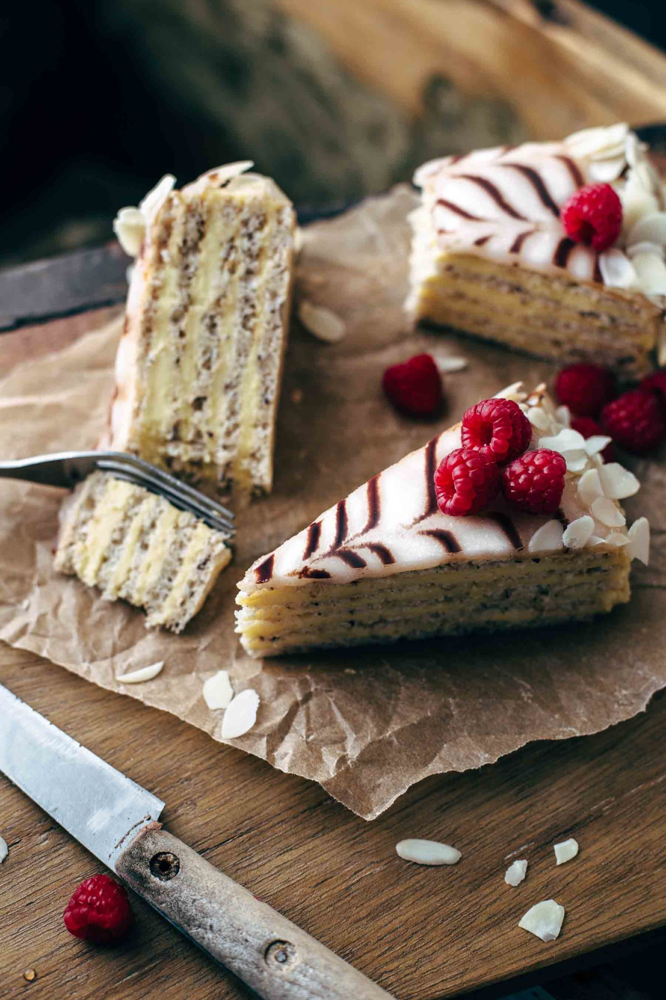

Hungarian Esterhazy Torte

Description
The Esterházy cake was invented in Hungary and is a very popular cake in Hungary and neighboring European countries such as Austria. It's made with thin layers of nut meringue, kirsch custard buttercream and rum apricot jam. It has a distinctive black pattern on the icing reminiscent of cobwebs.
Ingredients
Kirsch Custard Buttercream
- 5 large egg yolks
- 1/4 cup cornstarch, spooned and leveled
- 7/8 milk
- 1/2 cup granulated white sugar
- 7/8 cup unsalted butter, at room temperature
- 1 vanilla bean* (or 1 tsp pure vanilla extract
- 2 tbs Kirsch
Almond Hazelnut Meringue
- 3/4 ground hazelnuts, spooned and leveled
- 5/8 ground almonds, spooned and leveled
- 1/3 cup all-purpose floor, spooned and leveled
- pinch of salt
- 1 cup granulated white sugar
Glaze and Decoration
- 1/3 apricot jam
- 1 tbs dark rum
- 1/8 cup high-quality semi-sweet chocolate bars, melted
- 2 1/2 cups powdered sugar, sifted
- 2 1/2 tbs water
- 2 1/2 tsp light corn syrup
- 1 cup almond slices
Steps
- Custard: Combine yolks, cornstarch, and ⅜ cup of milk in a bowl and stir to combine.
- Bring ½ cup of milk and the sugar over medium heat to a boil until the sugar is completely dissolved. Whisk constantly. Slowly pour hot milk into the egg mixture. Whisk to combine. Slowly pour the tempered egg yolk mixture into the saucepan and cook until thick for about 2 minutes. Whisk continuously. Remove from the heat and transfer to a bowl. Cover with plastic wrap to prevent it from forming a skin. Chill 1 hour.
- Meringue layers: Using a pencil, draw five 9-inch (23cm) circles on parchment paper. Then turn the parchment paper over and place on baking sheets. Preheat oven to 350°F (175°C).
- In a bowl, combine nuts and flour and stir to combine. Set aside.
- In a large mixing bowl, using a handheld or stand mixer fitted with a whisk attachment, whisk egg whites and salt on medium-high speed until soft peaks form. Add sugar and whisk until glossy and stiff peaks form. Carefully fold in the flour mixture. Thinly spread the meringue to fill the drawn circles on the paper. Make sure all layers are the same thickness. Bake one layer at the time for 10-12 minutes until golden brown. Remove from the oven and immediately flip over the parchment paper and remove the paper. Let cool to room temperature.
- Custard: In a large bowl, beat butter on medium-high speed until creamy. Add custard little by little and stir to combine. Add kirsch and vanilla* and stir until fully combined and creamy. Set aside.
- Jam: Combine apricot jam and rum in a bowl and stir until smooth and combined. Set aside.
- Assemble the cake: Place the first meringue layer on a cake plate and spread with ¼ of the custard filling. Then place the second meringue layer on top and repeat the process until you have 4 layers of meringue and 4 layers of custard. Place the last layer (you want it to be the nicest layer of all layers) on top of it, upside out, with the smooth side facing up. Spread the apricot jam evenly on top. Then refrigerate for 30 minutes or until jam is set and dry.
- Decoration: Place melted chocolate in a ziplock bag and snip off a tiny edge of the bag. The line of chocolate that you will later draw on the icing should be 0.04 inch (1 mm) thick. Set aside.
- Glaze: Combine the sugar, water, and corn syrup and stir until smooth. Microwave for a few seconds until it reaches a temperature of 80-85°F (27-30°C). Immediately pour onto the chilled Esterhazy cake. Let the glaze drip down the sides of the cake.
- Pipe a chocolate wheel onto the frosting, starting from the center and working towards the edges. Alternately run the tip of a toothpick from the center to the edges and from the edges to the center 1-inch (2.5cm) apart. You will have 8-9 lines in each direction. Cover the sides with almonds, carefully pressing them against the sides with your hand. Chill in an airtight container in the refrigerator for at least 4 hours and store for up to 3 days.